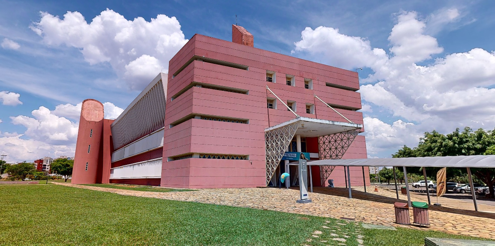

DESCRIÇÃO
O Bloco S é uma das principais estruturas acadêmicas do Campus Taguatinga da UCB, dedicado especialmente às atividades do curso de Odontologia. Ele abriga salas de aula, laboratórios especializados e a coordenação do curso, proporcionando um ambiente completo para o desenvolvimento teórico e prático dos estudantes.
SALAS E DEPARTAMENTOS
- TÉRRIO:salas S001 a S011 ,sendo: S001, S002, S003 central de material e esterilização;
- 1º ANDAR: salas S100 a S114; com maior parte das salas sendo clínicas odontológicas
- 2º ANDAR: salas 200 a 214;
- 3º ANDAR: salas 301 a 315
HORÁRIO DE FUNCIONAMENTO
- De segunda a sexta, das 8h10 às 21h45